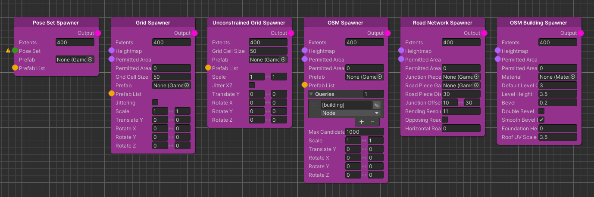
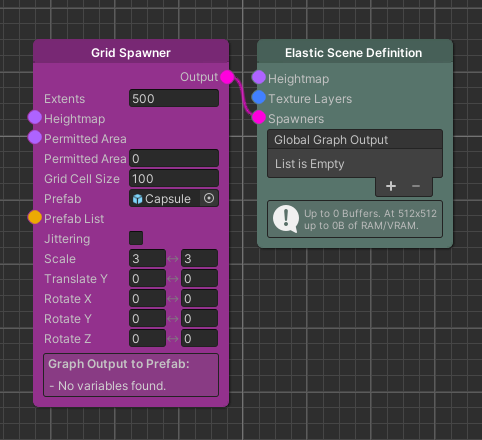
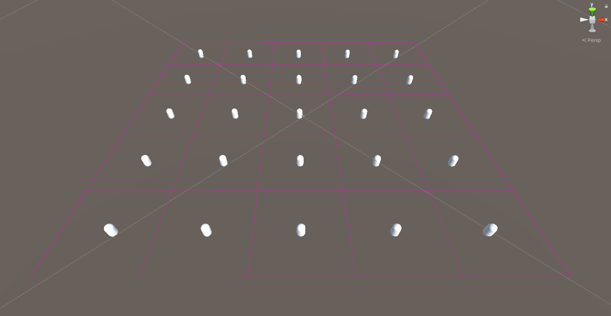
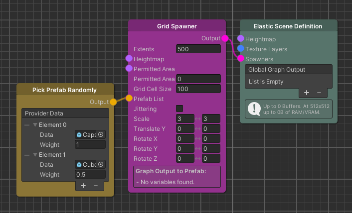
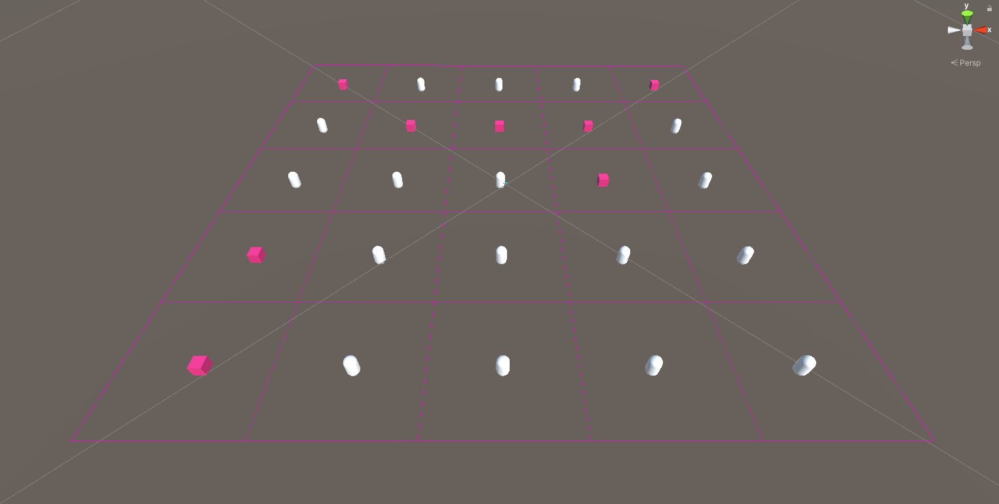
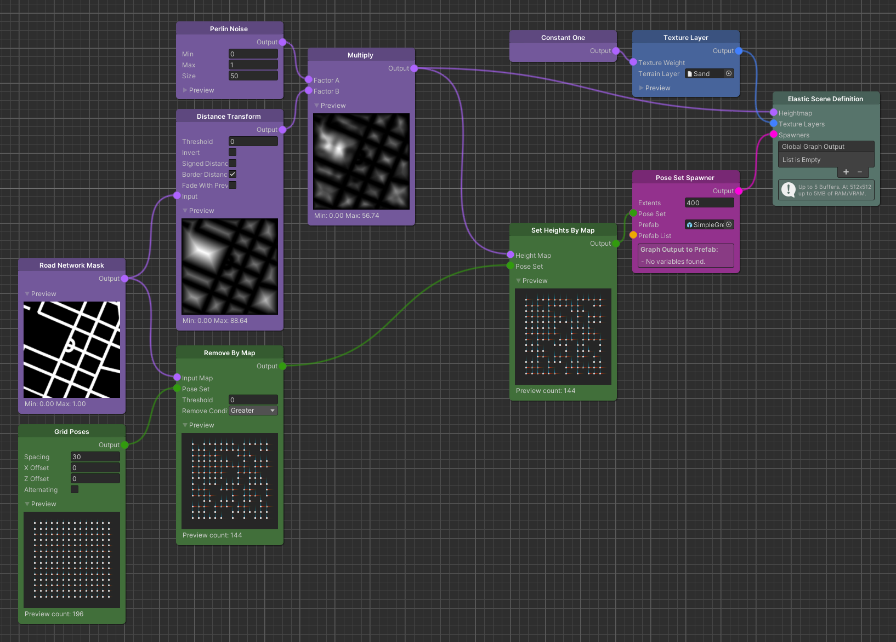
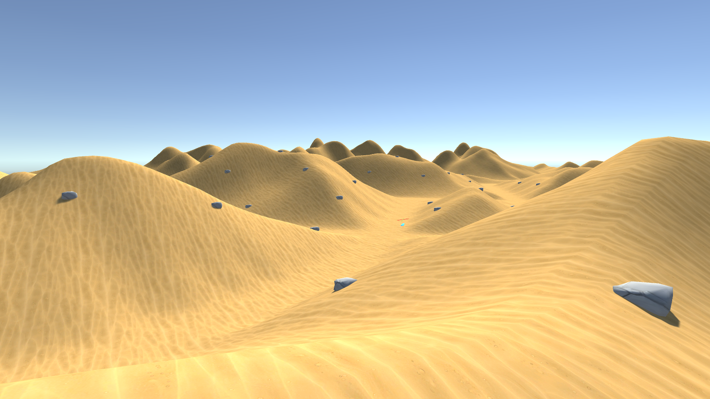

Spawner Nodes
The Spawner node type is unique within the Elastic Graph system because unlike Map or Pose nodes, Spawner nodes do not introduce and modify new sets of data to the graph. Instead, they use parts of such data sets to instantiate objects in the virtual world, at runtime.
The Elastic SDK ships with a variety of Spawner nodes that we will not cover in-depth here but rather give an introduction on how to use them for an elastic experience.

The Moving Grid
Before we start looking into individual Spawner nodes, there is an underlying principle that each Spawner inherits. To
spawn objects in an elastic manner we have to be able to frame a space in the virtual world correlating to the
real-world geolocation of the player.
We call this principle the Moving Grid.
 
Tip
Select a Spawner node in the graph to visualize the Moving Grid in Unity's scene view. The grid visualization will also update at runtime.
The Moving Grid is a data structure that provides a two-dimensional local grid of cells relative to the position of the generation origin. The grid position is intended to move when the player moves from a current cell to another inside this grid. Therefore, on each move, it will free instances that fall outside the grid and create new ones for the next row of cells.
Grid Extents
Since Spawners utilize the Moving Grid, they also expose an Extents field on their nodes. This setting determines the size of the Moving Grid and thus the area into which objects can be spawned. The basic idea here is that larger objects should be spawned in larger extents, since they are supposed to be seen at a distance, where smaller objects can be discarded.
Important
In general Spawners only work inside the generation bounds, since they can only access map data for this area. So if a Spawner's extents are exceeding the Elastic Scene Generator's extents, they will get clamped. One exception from this is the Unconstrained Spawner which can spawn beyond those bounds.
Permitted Area
Many Spawners will also provide a Map node input called Permitted Area. This input can be used to mask off area where no objects should get instantiated e.g. the road network.
Prefab List & Data Provider
Each Spawner of the Elastic SDK implements a Prefab List field that enables the user to link a node of type Data Provider. This effectively allows to references multiple Unity Prefab game objects that will then be selected for the spawning process, according to the Data Provider node implementation.
 
This example uses the Pick Prefab Randomly node so that the two referenced Prefabs are picked based on a random value compared to their weights.
Tip
In case you do not want to reference multiple assets you can use the single Prefab selection field on the Spawner nodes. This field will automatically disappear when a Prefab List is connected.
Pose Set Spawner
As its name suggest the Pose Set Spawner is a spawner that operates on a set of Poses. The Pose Set is a mandatory input that the Spawner uses to derive spawning positions and rotations in the engine scene.
In contrast to other Elastic SDK Spawners, the Pose Set Spawner is completely modular in a way, that you control how and where objects are spawned by modifying the set of poses that you provide as input.
The following examples shows a setup that modifies a set of Poses so that the Pose Set Spawner will only spawn objects where there is no road as well as place these object at the correct height of the surrounding terrain.

Note
Here we use the Set Height By Map Modifier after the Remove By Map Modifier to save some computational cost, since the processed Pose Set will be smaller after the removal process.

Due to the variety of available Pose Set Modifiers, the Pose Set Spawner is the most versatile Spawner in the Elastic SDK.
There are much more complex setups for the Pose Set Spawner, including nodes
like Translate Along Gradient
, which allow spawn behavior to be customized to user-defined environmental features.
While we will not cover these setups in this chapter, we do so in more advanced learning tracks. For a shortcut check
out the Further Reading section of this page.
Further Reading
World Creation: Elastic Spawning - Learn how to use essential Spawner nodes of the Elastic SDK.